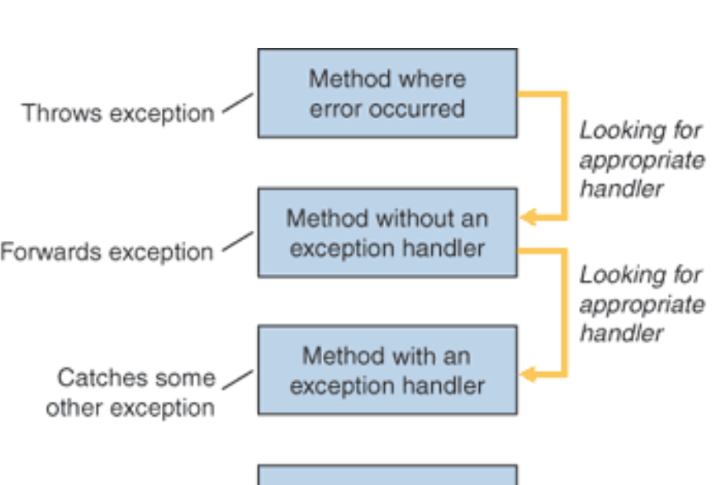
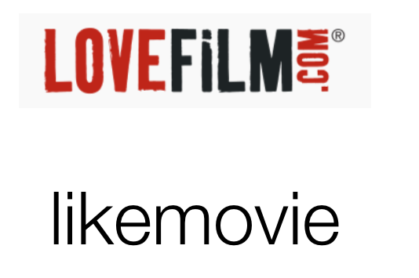

Streams
Serialization


At the heart of the JDK are object I/O and Serialization capabilities, packaged into a comprehensive library for managing the life cycle of simple objects. Although the approach taken by this particular base library has to some extent been superseded by other approaches, it remains an important and influential technical approach, that can be usefully applied in simpler standalone applications.
Pacemaker TDD 05

Pacemaker TDD 05

Exceptions

Dealing with unexpected events and errors is usually delegated to the Exceptions mechanism in Java. Here we review the nature of exceptions and identify some best practices when dealing with exceptions generated from libraries and frameworks.
Movie Assignment

A walk though how you might approach your second assignment
Movie Serialization

A look at a bug in our existing serialization library + an review of how CSV ingestion can be approached.
TDD-Lab-05

Extend the pacemaker project to include tests for the persistence mechanisms.
Command-Line

Extend the pacemaker project to include a simple command line facility